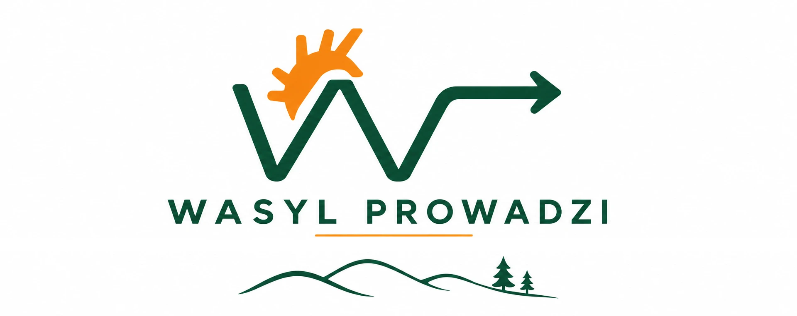
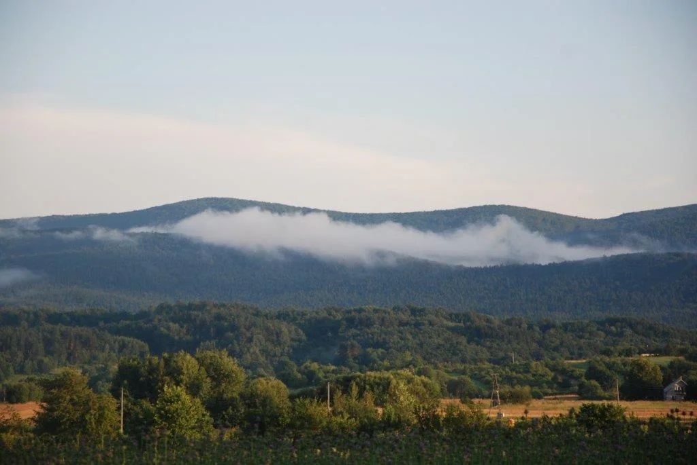

{{ t.heroH1 }}
{{ t.tagline }}

{{ t.heroLead }}
{{ t.kicker }}
{{ t.startLink }}01
{{ t.s1h }}
{{ t.s1p1 }}
{{ t.s1p2 }}
02
{{ t.s2h }}
{{ t.portraitCaption }}
{{ t.s2p1 }}
{{ t.s2p2 }}
{{ t.s2quote }}
03
{{ t.s3h }}
{{ t.s3p1 }}
{{ t.s3p2 }}
{{ t.long }}
{{ t.trailNote }}
{{ f.label }}
{{ f.value }}
04
{{ t.s4h }}
{{ t.s4p }}
{{ t.galleryLabel }}
05
{{ t.s5h }}
{{ t.opinionsNote }}
{{ o.text }}
06
{{ t.s6h }}
{{ t.callLabel }}
793 717 774{{ t.writeLabel }}
kontakt@wasylprowadzi.pl{{ t.contactNote }}
{{ t.privacy.note }}
{{ t.privacy.h }}
{{ p.title }}
{{ p.body }}
{{ t.terms.note }}
{{ t.terms.h }}
{{ p.num }}
{{ p.title }}
{{ p.body }}